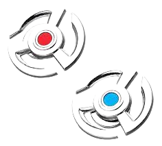
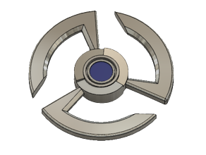
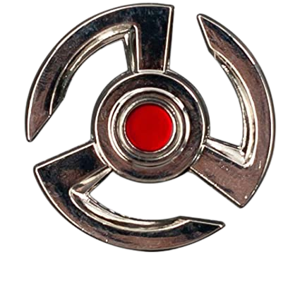
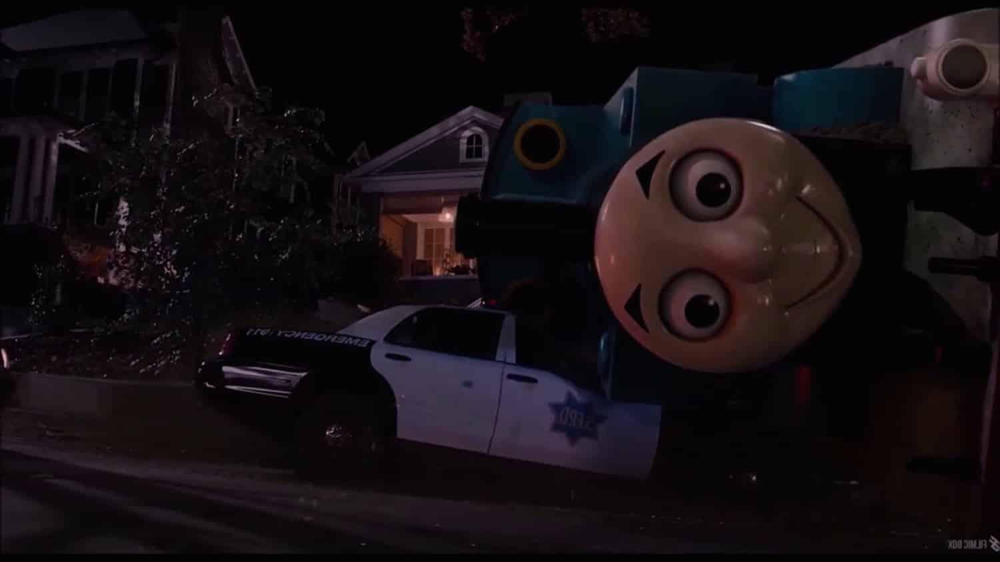

EMPRESA CRESCER
modificador de tamanho

Você já imaginou ter o poder de encolher ou aumentar objetos com apenas um toque? Agora, graças ao nosso modificador de tamanho futurista, isso é possível! Com esse dispositivo, você pode diminuir ou aumentar o tamanho de praticamente quase qualquer coisa que desejar, desde carros e móveis até objetos de arte .

o disco azul ira aumentar o objeto até 2,5m por 3,0m
 o disco vermelho ira diminuir até 11 cm ou um tamanho de um carrinho hot wheels
Nosso modificador de tamanho é a ferramenta perfeita para quem busca praticidade e versatilidade em seu dia a dia. Com ele, você pode economizar espaço valioso em sua casa ou escritório, tornando os objetos grandes muito mais manejáveis.
.jfif)
um dos nossos cientistas testou em um predio, e fucionou.
video de como o produto fuciona
Imagine poder guardar um carro grande em uma garagem pequena, ou encolher um sofá volumoso para caber em um espaço apertado.

No entanto, é importante ressaltar que o modificador de objetos futurista é projetado apenas para objetos inanimados . Não deve ser utilizado em animais, armas de fogo e drogas ilicitas.
.jfif)
Nesse momento ainda não é recomendado o uso em humanos,porém algums teste foram feitos em pessoas que possuem nanismo e houveram resultados supreendentes, veja nas imagems abaixo o antes o depois das cobaias
ANTES E DEPOIS
.png)
.png)
ANTES E DEPOIS
.jpg)
ANTES E DEPOIS
.png)
.png)
Não perca mais tempo! Adquira já o seu modificador de tamanho futurista por R$690.000.00 e comece a transformar o mundo ao seu redor
compre aqui
Todos os direitos reservados a © jorge